User guide
Paragliding Wind puts the hourly wind at all your takeoffs in one table and colours each hour by the takeoff's directions and your own limits. This guide takes you step by step, from the first start to the flight log.
1First start
The first time you open the app, you pick the takeoffs you care about. No account needed.

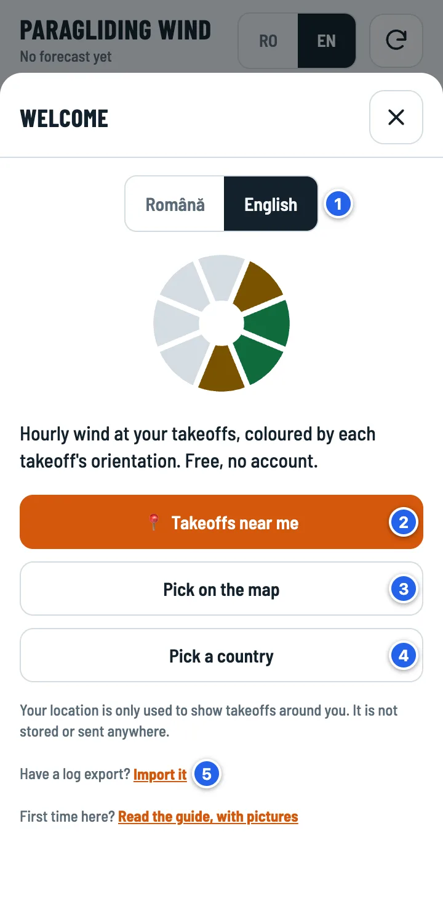
- Language: Romanian or English. You can change it any time: at the top of the main screen (RO / EN) or in Settings.
- Takeoffs near me: the takeoffs around you, nearest first. Your phone asks for location permission; your position is not stored and not sent anywhere.
- Pick on the map: the same takeoffs, on a map.
- Pick a country, if you'd rather not share your location or you fly somewhere else.
- Import it: have an Excel export of your log from another phone? It brings back both your takeoffs and your flying days.

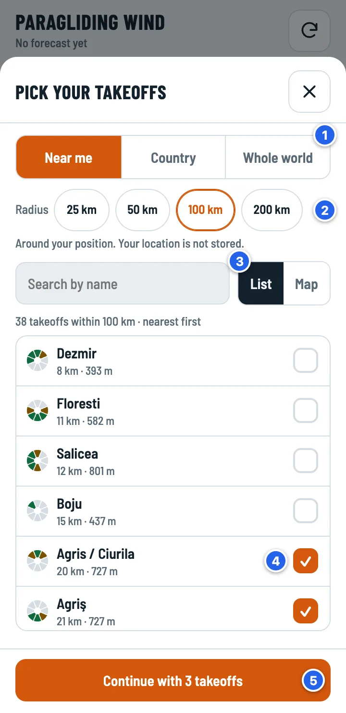
- The area: Near me, Country or Whole world. The whole world means 11,508 takeoffs (about 1 MB), so it loads only when you ask.
- The radius around you: 25, 50, 100 or 200 km.
- List or Map. In the list you can search by name.
- Tap a takeoff to tick or untick it. The circle on the left shows its directions: green = good, yellow = marginal. “no directions” means ParaglidingEarth doesn't have them (see below).
- Continue, then pick your limits (Student, Pilot or Advanced, details) and tap Done.

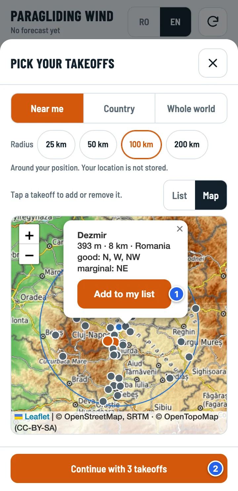
- Tap a dot to see the takeoff: altitude, distance, directions. Add to my list ticks it.
- Continue, as with the list.
On the map, orange dots are the takeoffs you picked and dots with a yellow outline have no directions. The blue circle is the radius you chose, with you in the middle. You can change everything later: takeoffs in Sites, limits in Settings.
2The hourly board
The main screen: each row is a takeoff, each column an hour. The four parts of the app are at the bottom.

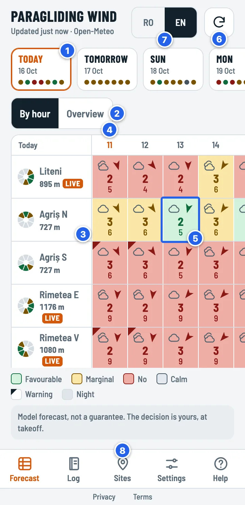
- The days: today and the next 6. Each dot is a takeoff, in your list's order, in the colour of its day; green means at least 2 favourable hours in a row. Tap a day to see it.
- By hour or Overview: the board with every hour, or the day at a glance. Next to them, Best first moves the takeoffs with a favourable window on the chosen day to the top, in both views.
- The takeoff: name, altitude and the circle of directions. LIVE = there is a Holfuy station within 5 km. Tap the name for the takeoff page.
- The current hour. Today, the board starts at the current hour; past hours stay on the left, faded. Swipe sideways for the other hours. On other days, the board starts at the first favourable hour.
- One hour at one takeoff. Tap it to see why it has this colour.
- ↻ downloads the forecast again; the line at the top says when it was updated. The forecast also refreshes by itself when you open or return to the app, if it is older than 30 minutes.
- RO / EN: the app language, any time.
- Navigation: Forecast (the board), Log, Sites, Settings and Help: how to read the board in short, plus this guide; Feedback: send an idea or a problem. Below them, in small print: Privacy and Terms.
3One cell, explained

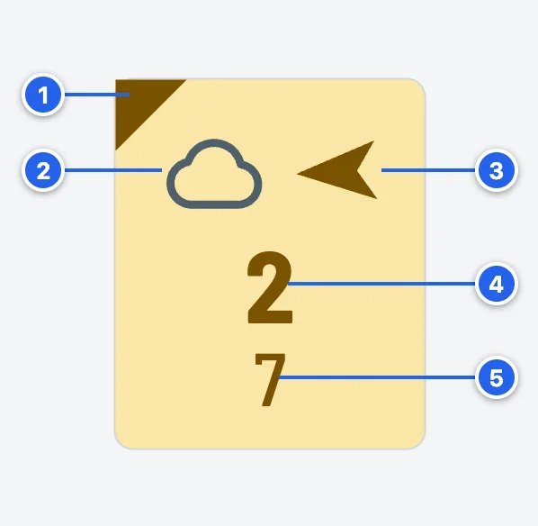
- The marked corner: a warning. Something about this hour needs reading: strong wind aloft, risk of storms or overdevelopment, or a takeoff without directions.
- The sky: clear, clouds (with their type), rain, fog, snow, thunderstorm.
- The arrow shows where the wind is going. An easterly wind has the arrow pointing west.
- The big number: the mean wind at 10 m, in m/s.
- The small number: the gusts, in m/s. When it rains, the rain in mm shows instead.
The colours
The colours stay distinct for colour-blind users too. The exact words are in each hour's sheet.
4Why this colour?
Tap any cell. The hour's sheet shows the verdict and every reason that lowered it.

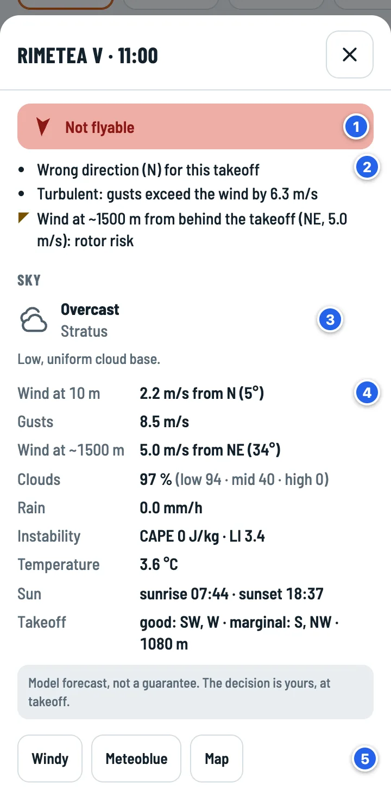
- The verdict, with the wind arrow.
- The reasons: every rule that counted; warnings have the marked corner. Here: the wrong direction, gusts 6 m/s above the mean wind (turbulent) and wind at ~1500 m from behind the takeoff (rotor risk).
- The sky: the cloud type and what it means for flying.
- The hour's data: wind at 10 m and at ~1500 m, gusts, clouds by level, rain, instability (CAPE and LI), temperature, sunrise and sunset, the takeoff's directions.
- The same takeoff in Windy, Meteoblue and on a map.
5Overview: the whole day
On a phone, “By hour” shows 4–5 hours at a time. “Overview” fits the whole day on one screen.

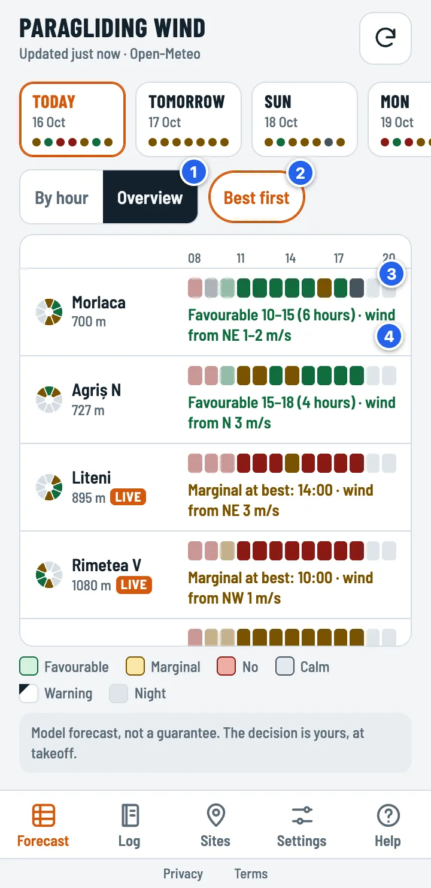
- Overview. The app remembers your choice.
- Best first: takeoffs with a favourable window move to the top, here and in “By hour”. Today, only the hours still ahead count. When it's off, the order is your list's.
- The strip of hours: one square per hour, from 08 to 20, in the board's colours.
- The best window, for example “Favourable 10–15 (6 hours) · wind from NE 1–2 m/s”. “Favourable” needs at least 2 good hours in a row; a single good hour shows as “Only 15:00”. When instability is forecast, “overdevelopment risk from …” is added.
Tap a row: the board switches to “By hour”, at that takeoff's window, with the row highlighted.
6The takeoff page
Tap a takeoff's name on the board.

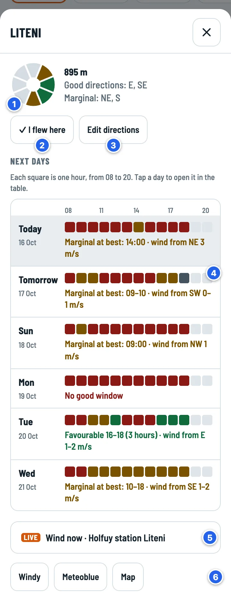
- The takeoff's directions (green = good, yellow = marginal) and altitude.
- ✓ I flew here adds a flying day to your log, with this takeoff already filled in.
- Edit directions, if you know better than ParaglidingEarth.
- Next days: one strip of hours per day and the best window. Tap a day to open it on the board.
- Wind now: the widget of the nearest Holfuy station (up to 5 km). It is folded and loads only when you open it.
- Links to Windy, Meteoblue and a map.
Takeoffs without directions
About a third of the takeoffs in ParaglidingEarth have no wind directions recorded. For those, the app can't tell whether the wind is blowing up the slope, so the verdict is Marginal at best, with the warning corner, until you set the directions.

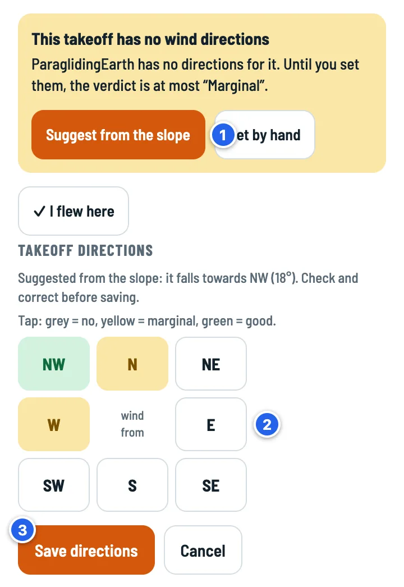
- Suggest from the slope: the app reads the altitude at 8 points 100 m around the takeoff and suggests the direction the slope falls away to.
- Check and correct. Tap a direction to change it: grey = no, yellow = marginal, green = good.
- Save directions. From now on the takeoff gets a normal verdict.
7Your takeoff list
The Sites button at the bottom.

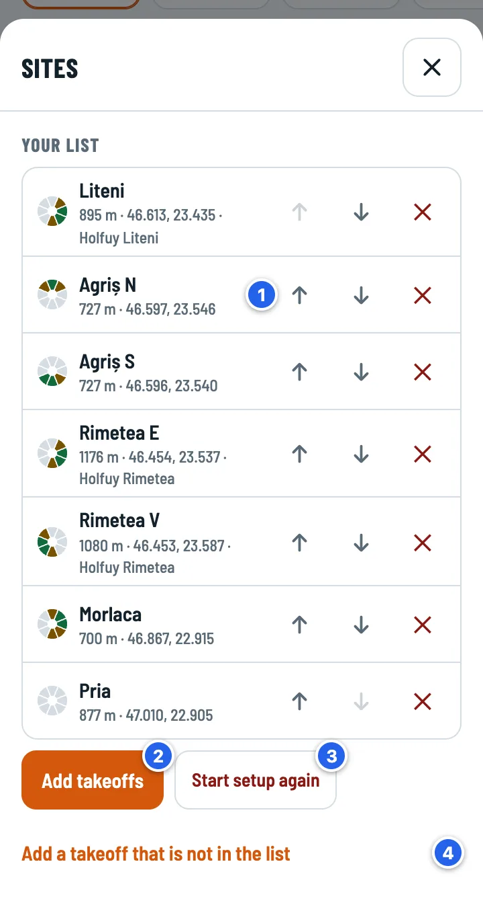
- ↑ ↓ change the order; the same order is used on the board and in the day dots. ✕ removes the takeoff; you have 5 seconds to tap Undo.
- Add takeoffs: the same screen as at the first start (near you, a country or the whole world; list or map).
- Start setup again: pick your takeoffs from scratch (tap twice). Your log is not touched.
- Add a takeoff that is not in the list: see below.
A new takeoff, by hand
- Pick on the map and drop a pin on the takeoff. The app fills in the coordinates, altitude, place name and the directions suggested by the slope. If ParaglidingEarth already has a takeoff within 1 km, the app offers it.
- I'm at the takeoff (GPS) drops the pin where you are.
- Or type the coordinates. From Google Maps: long-press the takeoff and copy the coordinates shown at the top. Short links (maps.app.goo.gl) don't contain the coordinates.
- Holfuy station (optional): the station number or its link. Empty = the nearest one, up to 5 km.
- Directions: tap each direction (grey = no, yellow = marginal, green = good). At least one must be set.
8Limits, hours and language
The Settings button at the bottom.

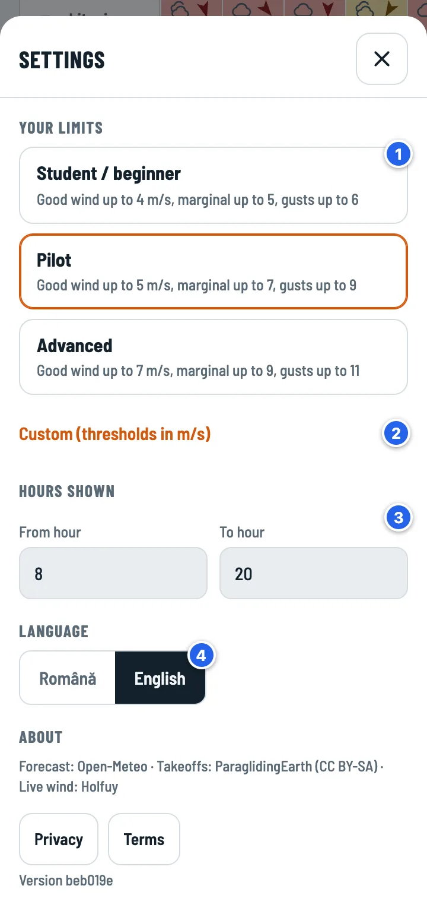
- Your limits: Student / beginner, Pilot or Advanced. All the colours are recalculated straight away.
- Custom: your own thresholds, in m/s.
- Hours shown: 08–20 by default.
- Language: Romanian or English.
| Student / beginner | Pilot | Advanced | |
|---|---|---|---|
| Good wind up to | 4 m/s | 5 m/s | 7 m/s |
| Marginal up to | 5 m/s | 7 m/s | 9 m/s |
| Maximum gusts | 6 m/s | 9 m/s | 11 m/s |
| Gust − wind (turbulent) above | 3 m/s | 4 m/s | 5 m/s |
In every profile: calm below 1 m/s, rain above 0.2 mm/h.
9The flight log
One entry is one flying day at one site, with your total airtime that day. The log stays on your phone and, if you want, in your Google Drive.

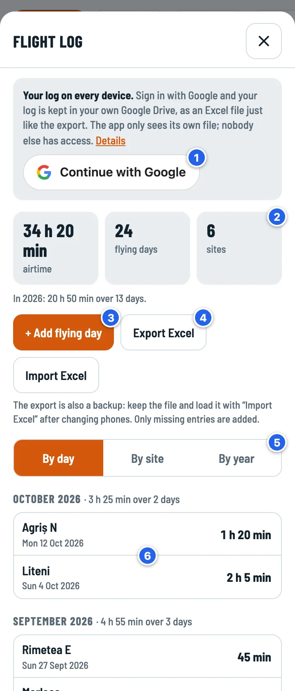
- Continue with Google (optional): the log is kept in your Google Drive, as an Excel file, and synced across your devices. The app can only see its own file.
- The totals: airtime, flying days, sites. Below them, the current year.
- + Add flying day.
- Export Excel and Import Excel: your backup. Importing adds only what's missing.
- By day, By site or By year.
- Tap a day to edit or delete it.

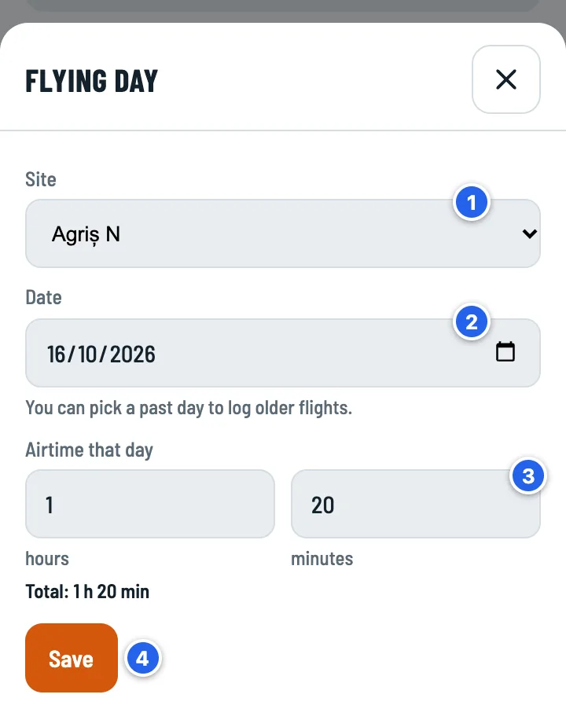
- The site: your takeoffs, the sites in your log or “Other site…”.
- The date. Past days are fine.
- Airtime that day, in hours and minutes. 80 minutes becomes 1 h 20 min.
- Save.

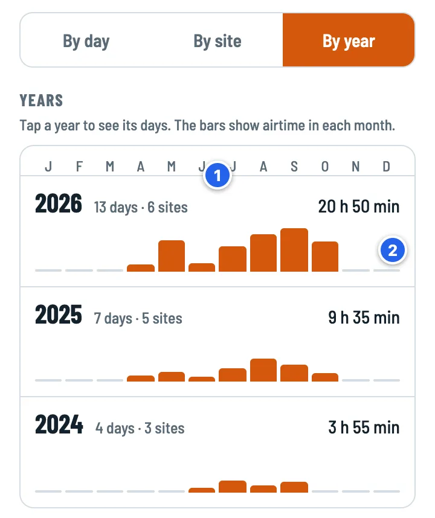
- Each year: flying days, sites and total airtime. Tap a year to see its days, with the “2025 ✕” filter; the totals at the top then show only that year.
- One bar per month, on the same scale for every year, so you can compare them.
Backup and a new phone
- With Google: on the new phone, open the Log, tap Continue with Google and the log comes back from Drive. The file is called “Vânt la Decolare - jurnal de zbor.xlsx” and has the same sheets as the export.
- Without Google: Export Excel on the old phone, then Import Excel on the new one (or Import it at the first start). Your takeoffs come along too, from the “Sites” sheet.
- Signing out (tap twice) removes the log from that device; it stays in Drive. If you have changes that haven't reached Drive yet, the app won't sign you out.
More about your data in the Privacy policy.
10On your home screen
The app is a web page. You can put it on your home screen, like an app, without a store:
- Android (Chrome): open paraglidingwind.com, tap the ⋮ menu, then Add to Home screen (or Install app).
- iPhone (Safari): tap the Share button, then Add to Home Screen.
Your takeoffs, limits and log live in the browser where you use the app. Clearing the site's data in the browser clears them too, so keep an Excel export or sign in with Google. On iPhone, the home-screen app keeps its data separate from Safari: if you started in Safari, bring your log over with Google or Import Excel.
11How the verdict is worked out
For every hour the app checks the rules below; the hour's verdict is the worst of them. The wind and gust thresholds come from your limits (the table shows Pilot).
| What is checked | Marginal | No |
|---|---|---|
| Wind direction at 10 m (8 directions), against the takeoff's directions | a marginal direction; a takeoff without directions | the wrong direction |
| Mean wind at 10 m | above 5 m/s | above 7 m/s |
| Gusts | more than 4 m/s above the mean wind (turbulent) | above 9 m/s |
| Rain | – | above 0.2 mm/h |
| Wind at ~1500 m (850 hPa) | above 8 m/s; or above 5 m/s from behind the takeoff (rotor risk) | above 12 m/s |
| Thunderstorm | – | forecast for that hour or the next 2 hours |
| Instability | CAPE above 800 J/kg and LI below −2 (overdevelopment risk) | – |
- Below 1 m/s the hour is Calm: the direction no longer matters. Gusts, rain, wind aloft and storms are still checked.
- At night (from the forecast's daylight flag for each hour) there is no verdict.
- A day is Favourable (in the Overview, the day dots and the takeoff page) only with at least 2 favourable hours in a row.
- The forecast comes from Open-Meteo and is computed on a grid a few kilometres wide.
12Questions
Why do two nearby takeoffs have exactly the same wind?
The forecast is computed on a grid a few kilometres wide, and takeoffs in the same grid square get the same wind. The verdict still differs, by each takeoff's directions.
The wind is light. Why is it “Marginal” or “No”?
Tap the cell; the reason is in the hour's sheet. Common ones: gusts well above the mean wind (turbulent), strong wind aloft or wind aloft from behind the takeoff, overdevelopment risk, a takeoff without directions.
How often is the forecast updated?
Open-Meteo updates its models several times a day. The app downloads the forecast again when you open or return to it, if the saved one is older than 30 minutes. ↻ downloads it any time.
What happens without signal?
You see the last forecast downloaded, with a message at the top and the time it was downloaded. Days you add to the log are saved on the phone and reach Google Drive at the next sync.
Where is my data?
On your phone, in the browser. The app has no server and collects nothing about you. Optionally, your log is kept in your own Google Drive. Details in the Privacy policy.
Where do the takeoffs and their directions come from?
From ParaglidingEarth (CC BY-SA), the takeoff database maintained by pilots. The directions are the ones recorded there; you can correct them on the takeoff page.
I found a mistake or have an idea.
Tap Feedback at the bottom: pick Idea, Problem or Something else, write your message, and your email app opens with it ready, addressed to feedback@paraglidingwind.com. You send it yourself, from your own address. For technical issues you can also write on GitHub.